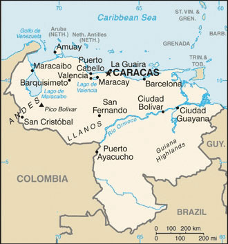
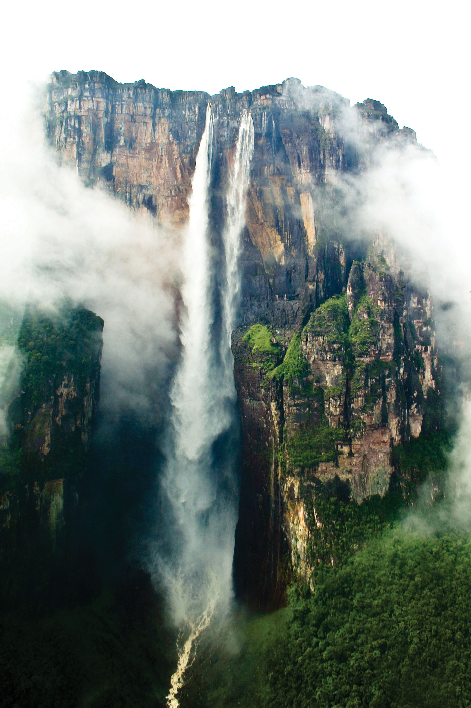
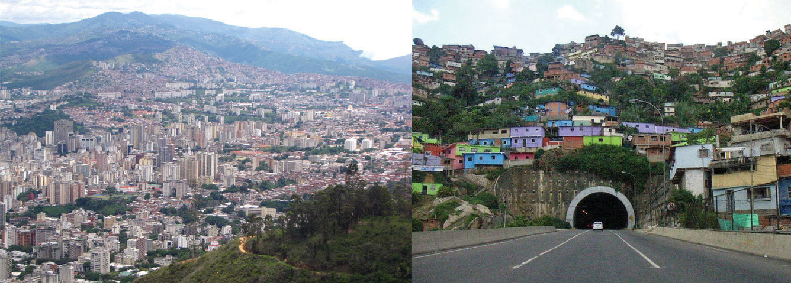
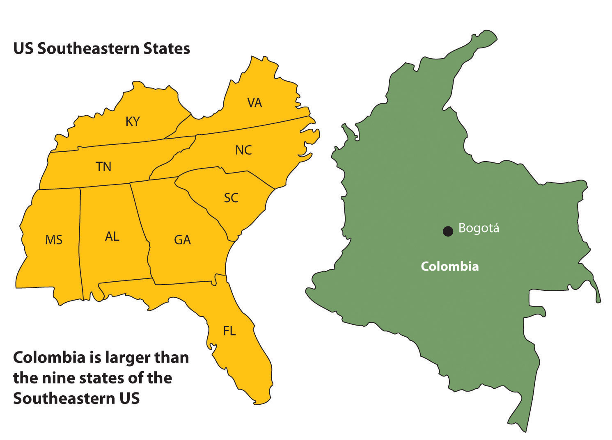
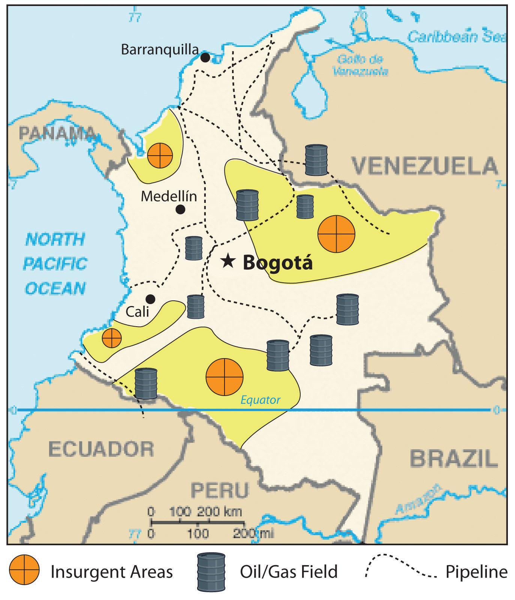
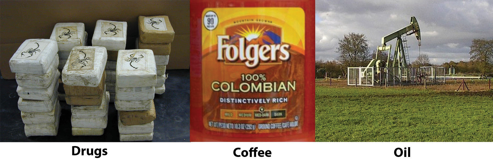
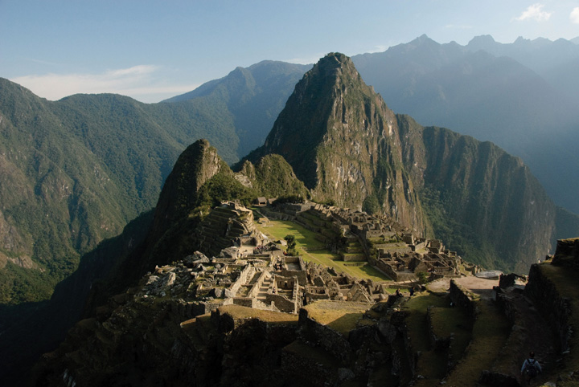
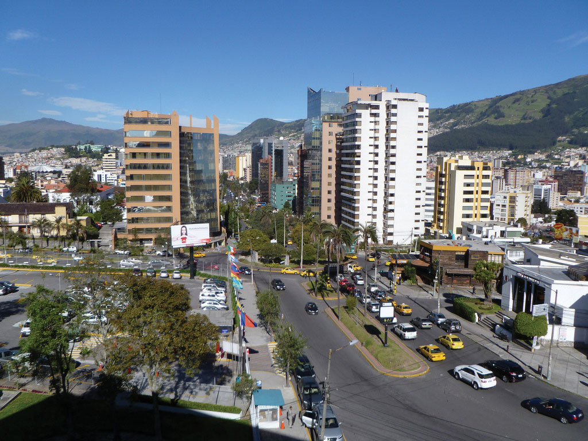
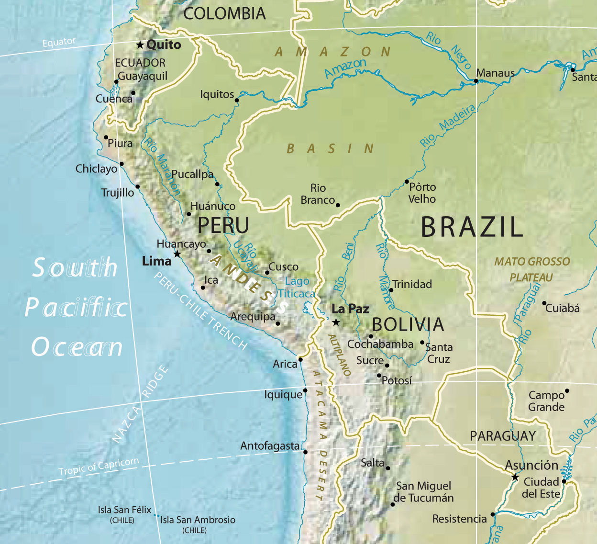

Bordering the Caribbean is the large urban country of Venezuela. The Andes Mountains reach into the northern part of the country and make up the terrain of the northern coastal region all the way to the capital city of Caracas. The large grassland plains of the Llanos extend farther south from the Colombian border to the Orinoco River delta. The Llanos is a large, sparsely populated region that makes up about one-third of the country. It is remote, susceptible to flooding, and used mainly for raising cattle. In the southeast of Venezuela are the Guiana Highlands, which make for a spectacular physical landscape of tropical forests and rugged mountainous terrain. The highlands include Angel Falls, the tallest waterfall in the world. Angel Falls drops 2,647 feet and is Venezuela’s most popular tourist attraction. Lake Maracaibo, a large inland sea located in the western region of the country, is not a true lake in that it is open to the Caribbean Sea, but it is considered the largest inland body of water in South America. Lake Titicaca, located in the Andean region of the Altiplano on the border between Peru and Bolivia, is considered the continent’s largest freshwater lake.
Figure 6.14 Northern South America and Venezuela
Notice that most of the main cities are located along the northern coast.
Source: Map courtesy of the CIA World Factbook, https://www.cia.gov/library/publications/the-world-factbook/geos/ve.html.
Figure 6.15 Angel Falls, Venezuela
The total falls is estimated at 3,212 feet; the largest free fall is estimated to be about 2,647 feet—about half a mile. Angel Falls is the country’s number one tourist attraction.
Source: Photo courtesy of Inti, http://www.flickr.com/photos/inti/3102779830.
Venezuela has an assortment of physical regions, but most of the population lives along the northern coast. About 90 percent live in urban areas, and the capital Caracas has the highest population. Less than 5 percent of the population lives south of the Orinoco River, and Amerindian groups live in the interior and along the river.
Included in the Mixed Mestizo Cultural Region, Venezuela has a heavy Spanish influence laid over an Amerindian base in a plantation region known for its African infusion. There is also a strong Caribbean cultural flavor, which is evident in the region’s music and lifestyle. The official language is Spanish, but more than thirty indigenous languages are still spoken in the country.
Venezuela gained its independence from Spain in 1821 and has developed into an urban country with an economy based on oil production. A large extent of the interior is undeveloped. Venezuela does not have extensively developed agricultural production, so most food goods are imported. Lake Maracaibo has vast oil reserves beneath it that have provided substantial wealth to the country.
As much as 90 percent of Venezuela’s export earnings are from the export of oil. Venezuela’s national oil company, CITGO, has made extensive inroads into the US gas station market. The country was one of the founding members of OPEC (Organization of Petroleum Exporting Countries), which is usually associated with the oil-rich states of the Persian Gulf. In the past decade, Venezuela has been one of the top five countries exporting oil to the United States. The other four are Canada, Mexico, Saudi Arabia, and Nigeria.
As is the case with many countries, national wealth in Venezuela does not filter down to most of the population. The wealthy elite who have benefited the most from the nation’s wealth often find themselves on the opposite side of the political debate from the majority, who are likely to live in poor conditions. Caracas has many upscale neighborhoods, but it also has a large number of slums on the outskirts of the city. Slums in South America go by different names, such as barriosTerm used to describe a slum in the northern parts of South America and Middle America. in Venezuela or favelasTerm used to describe a slum in parts of South America, particularly Brazil. in Brazil. Many of Venezuela’s barrios are built on the mountainsides of the Andes.
Figure 6.16 The Two Sides of Caracas, the Capital City of Venezuela
The photo on the left is of the main urban core, with upscale neighborhoods. The photo on the right is a barrio located on a steep mountainside. Barrios are usually self-constructed slum areas and are similar to favelas in Brazil.
Sources: Photo on the left courtesy of Cristóbal Alvarado Minic, http://www.flickr.com/photos/ctam/4732562277. Photo on the right courtesy of Danila Medvedev, http://www.flickr.com/photos/danila/29987096.
Exporting oil to the United States does not inherently lead to a friendly political relationship between the United States and Venezuela. There has been some political unrest within the country related to the current president, Hugo Chavez, holding continuous terms in office without term limits. President Chavez has held close ties with socialist Cuba and with the Castro regime and has made somewhat antagonistic statements about the world’s core economic countries. From time to time, his rhetoric and his positions are not geared toward enhancing the country’s political relationship with the United States. This situation has caused concern within the US political establishment with regard to the position that the United States takes toward Venezuela. Nevertheless, the United States remains Venezuela’s number one trading partner in both imports and exports.
Politics in Venezuela often plays the wealthy elites against the poorer majority, and President Chavez has not been an exception. Chavez has supported socialist political leaders from other Latin American states and has pushed a globalization agenda along the same lines. The country’s enormous oil revenues and its current political climate have increased Venezuela’s visibility in the global arena, but how this will play out over the long term is unclear. In the past, Latin America has had a greater number of elected political leaders with more progressive or socialist views. These trends continue to shape the economic trade agreements between countries. Venezuela has been working to increase sales of oil to countries in Mercosur (the Southern Cone Common Market), which is the most significant trade association in South America.
Globalization is also evident in Venezuela’s cultural and social dynamics. In many Latin American countries, soccer (European football) is the most popular sport, but Venezuela’s biggest sport is baseball because of the influence of early US activity in the country’s oil industry. Soccer is gaining attention and support, however. Orchestras and classical music performances have also gained notoriety in recent years. Concert halls from the Americas to Europe have experienced the performances of the Simón Bolívar Youth Orchestra. The Miss Venezuela pageant is a major production for the country, and Venezuela has won the top title at least five times in each of the following pageants: Miss World, Miss Universe, and Miss International.
Three ranges of the Andes Mountains run from north to south through Colombia, which is larger than the nine most southeastern US states. With a land area covering about 440,839 square miles, Colombia is more than ten times larger than the US state of Kentucky and close to twice the size of France. Colombia borders five countries, with the Caribbean to the north, the Pacific Ocean to the west, the Orinoco River to the east, and a short segment of the Amazon River to the far south. Even though agriculture has been a mainstay of the country’s economic activities, because of the influence of the mountainous terrain, about 75 percent of the population lives in urban areas.
Figure 6.17 Physical Size of Colombia: 440,839 Square Miles
Colombia was a Spanish colony during the time that Spain controlled most of western South America. Colombia became independent in 1819. The region of Panama, which was first a part of Colombia, broke away in 1903 when the United States backed Panama’s independence movement. After Colombia became independent of Spain, the conservatives (wealthy elite) and the liberals (poor workers) struggled to gain control of the government. Since 1948, the conflict, known as La Violencia, has caused more than two hundred thousand casualties. During the twentieth century the government in Colombia has not always been peaceful or stable. By the beginning of the twenty-first century the government has become more unified and the country has even witnessed an increase in tourism.
Colombia’s tropical climate and its many remote areas contributed to its development as a major coca-growing region. By the 1970s, extensive drug smuggling had developed, and powerful drug cartels became major political brokers within the country, competing against the government for control of Colombia. The largest and most organized cartels operated out of Medellin and Cali, the second- and third-largest cities in the country after the capital city of Bogotá.
The coca plant grows throughout the slopes of the Andes, from Colombia to Bolivia. Historically, locals have chewed it or brewed it into tea. Coca can alleviate elevation sickness and act as a mild stimulant. Using modern methods and strong chemicals, the coca leaves can be converted into coca paste and then into cocaine hydrochloride, a powerful narcotic. It often takes up to a ton of such chemicals as sulfuric acid, kerosene, methyl alcohol, and additional substitutes to produce a kilo of cocaine. Once the process is completed, most of the chemicals are discarded and frequently find their way into nearby rivers and streams, which are the same water supplies that local people drink, clean with, and bathe in. Birth defects have become a problem in coca-growing regions because of the high levels of chemical pollution in water supplies.
It must be noted that the short, leafy coca plant that cocaine comes from is not the same as the cacao tree that produces the beans that chocolate or cocoa comes from. They are two completely different plants with separate processes.
The United States is the largest cocaine market. Secret airfields and private boats transport the cocaine from Colombia to distribution centers in Mexico, Central America, or the Caribbean. From there, the drugs are smuggled into the United States. Colombian drugs are a multibillion-dollar industry that makes up a large portion of the Colombian economy. The effect of the drug industry on the people of Colombia is extensive—from the gunfire on the streets to the corruption of government officials. In recent years, the same drug cartels that have operated the cocaine industry have imported opium poppies, which grow well on the higher and more arid slopes of the Andes. Opium poppies are native to Asia but have been transported to South America. Opium is extracted from the seedpod and can be further refined into heroin. Colombian drug cartels, with a Mexican distribution network, have muscled into as much as 20 percent of the US heroin market. The US government has supported the Colombian government in the fight against the drug cartels and the trafficking of illegal drugs out of Colombia.
Colombia’s two main legal exports to the United States are coffee and oil. Coffee is only grown in the tropics, since coffee trees must be grown in a frost-free environment. Coffee trees, which originally grew in Ethiopia, have since been grown throughout the world. Coffee trees can grow in elevations from sea level to six thousand feet, but most of the best specialty coffee is grown at elevations between three thousand to six thousand feet. Colombia has ideal conditions for growing coffee and was once the world’s largest coffee producer; now Brazil and Vietnam each produce more.
Early coffee production in Colombia was initially promoted by Catholic priests who were influential in supporting local parishioners to grow the crop. The industry was greatly enhanced in 1927 with the formation of the National Federation of Coffee Growers of Colombia. Coffee production on the mountain ranges of the Andes in Colombia supports up to a half million small farms and local growers that make up a large portion of the coffee economy. Harvesting coffee is labor intensive and can employ large numbers of workers. The seasonal nature of the harvest also leaves workers to find employment during the rest of the growing season.
In recent years, there has been growing concern about how climate change will continue to affect the region’s coffee production. In the past century, parts of Colombia experienced up to a 1 ºC average temperature increase and up to a 25 percent increase in precipitation. These climate changes have negatively affected coffee output and reduced coffee production as much as 25 percent in some areas. New agricultural methods are being developed in an attempt to counter these effects.
Oil has now become Colombia’s number one legal export. Oil is found in fields in the northern and central regions of Colombia. Immense quantities of coal are also found in the same regions, but oil is more valued on the export market. Pipelines connect the interior oil fields of Colombia with the northern ports. The US market size and population make it the world’s largest oil consumer. US oil companies have been investing in the development of Colombian oil for many years. Colombia has been a developing oil source even though its total extractable resources are not as vast as in other countries. For example, in 2006 the United States imported more oil from Colombia than from Kuwait, Oman, the United Arab Emirates (UAE), Bahrain, Qatar, and Yemen combined.
Figure 6.18 Insurgent Areas
Insurgent groups control regions in Colombia as large as US states.
Source: Updated from map courtesy of the CIA World Factbook.
Since the United States is the largest consumer of Colombian oil, it is easy to understand why the United States has a vested interest in the stability of the Colombian government. A sizable portion of Colombia is controlled not by the government but by drug cartels or other insurgent groups. Dozens of guerilla organizations also control portions of Colombia. Some insurgent groups support the government and are against the drug lords, while others fight the government and work independently or with the cartels. Drug sales, kidnappings, and extortion of legitimate businesses provide income to these groups. Thousands of children serve in these groups, and about a third of them are female. The most powerful insurgent group is FARC (Revolutionary Armed Forces of Colombia), which controls entire regions the size of many US states. FARC is a recognized political entity by neighboring countries but is not given the same recognition by the United States and many external countries of the region.
Figure 6.19 Colombian Exports
The three main export products of Colombia are illegal drugs, oil, and coffee. The United States is the largest consumer of all three.
Sources: Photo on the left courtesy of the DEA, http://www.justice.gov/dea/photos/cocaine/cocaine_bricks_scorpion_logo.jpg. Photo in the center by R. Berglee. Photo on the right from http://commons.wikimedia.org/wiki/File:Ja-knikker_op.jpg.
The relationship between Colombia and the United States is often conflicting. The US consumer supports the Colombian drug cartels by being the largest consumer of illegal drugs. The US government, under the Drug Enforcement Administration (DEA), has declared a war on drugs and has supported the Colombian government with billions of dollars in foreign aid to fight that war. On another front, US oil corporations have paid insurgent groups to protect their oil assets. Oil is exported to the United States, bringing billions of dollars into the Colombian economy. The chaos in Colombia is directly related to the exploitation and marketing of their resources. It is the people of Colombia that suffer in the cross fire from this civil war of corruption, crime, death, and destruction. The United States is a counterforce partner in this situation but operates from the consumer end of the resource pipeline. The largest consumer market for Colombia’s export of oil, drugs, and coffee is the United States, which is also the largest contributor of foreign aid to Colombia.
The Central Andes, which includes Ecuador, Peru, and Bolivia, were home to the Inca Empire. The empire had gone through some internal divisions and was working on unifying the region when Francisco Pizarro’s small army defeated the Incan warriors and brought about colonial rule beginning in the 1530s. Many cultures lived in the Central Andes before the Inca, and their legacy continues in the customs and the ways of the Amerindian people who still live there today. Spanish is the official language, or the lingua franca, but indigenous languages are widely spoken and dominate in the rural areas and remote villages. Ecuador, Peru, and Bolivia make up the core of the Rural Amerindian Region of South America. There have been border disputes among the three countries, and also with their neighbors. Nevertheless, they all share the Andes and have many things in common.
Figure 6.20 Machu Picchu
High in the Peruvian Andes, the Lost City of the Incas, Machu Picchu, was rediscovered in 1911 by Yale archaeologist Hiram Bingham and is one of the most beautiful and enigmatic ancient sites in the world. The ruins are located at about 7,970 feet in elevation and are surrounded by higher peaks of the Andes.
Source: Photo courtesy of funkz, http://www.flickr.com/photos/funkz/4034082685.
The physical geography of the Central Andes includes more than just the high Andes Mountains, although they dominate the landscape. The coastal region to the west of the Andes is generally warmer than the cooler climate of the mountains. The equatorial region is rather humid. The coastal region in southern Peru is dry and arid because of the ocean currents and the rain shadow effect of the Andes, which creates the Atacama Desert that extends up from northern Chile. Southwest Bolivia has some of the world’s largest salt flats in this dry and barren region. In the interior, on the eastern side of the mountain ranges, is the huge expanse of the Amazon Basin. Tropical and humid with heavy precipitation is generally the climate rule. Rain forests and jungle fauna can be found on the eastern slopes. The Altiplano region has the high-elevation Lake Titicaca. The variations in physical terrain provide extensive biodiversity in animal and plant species. It also supports a variety of economic activities to exploit the bountiful natural resources.
Even though the Altiplano region borders the Pacific Ocean, it also links directly to the Atlantic Ocean. The headwaters that create the Amazon River start in Peru, and by the time the water reaches the Peruvian city of Iquitos, the river is large enough to accommodate large shipping vessels. Iquitos is a port city for the Atlantic Ocean with access to Europe, Africa, or eastern North America. The port also links the region with Brazil’s free-trade zone in Manaus, which has access to large oceangoing shipping and an international market.
The region’s main income comes from exports of minerals, fossil fuels, and agricultural products. Oil is the number one means of gaining national wealth in Ecuador and Peru; natural gas is the number one export of Bolivia. Gold, silver, tin, and other minerals are also abundant and are being exploited as conditions allow. The Spanish opened up a large silver-mining operation in Potosí, Bolivia, which continues to be exploited with modern mining methods. Potosí, one of the earth’s highest-elevation cities at 13,420 feet above sea level, was once the largest silver mine in the world.
The city of Lima, Peru, was built on wealth from gold and silver extracted from the Inca Empire and the Andes Mountains. As is the case in many peripheral regions, the economic state of Peru, Ecuador, and Bolivia is dependent on global prices for their export products. There has been considerable conflict and political wrangling about who controls the wealth from extractive economic activities. Originally, the Spanish conquistadors took the materials and the wealth. They were replaced by Mestizo land owners and wealthy elites who struck deals with international corporations. The corporations exploited the countries’ natural resources, with little profit actually ending up in the hands of most of the people. These issues remain at the top of the political agendas in all three countries.
Figure 6.21 Quito, Ecuador
Quito, Ecuador, is an urban center high in the Andes, with a population of more than 1.5 million. This photo shows the large buildings of the central business district with the mountains in the background surrounding the city. Quito is at about 9,200 feet in elevation and is considered the second-highest-elevation capital in the world after La Paz in Bolivia.
Source: Photo courtesy of David Berkowitz, http://www.flickr.com/photos/davidberkowitz/4870874502.
Poverty and the exploitation of natural resources usually result in environmental degradation unless proper measures are taken to prevent it. The area’s heavy reliance on oil and gas extraction to gain national wealth has come at a great cost to their environment. Many oil spills have caused oil to enter the freshwater supplies of local residents and pollute the rivers and streams of the Amazon Basin. Mining has traditionally devastated the land because large portions of earth are removed to extract the ore or mineral. Pollution is causing a loss of habitats and destroying ecosystems, and few measures are being taken to prevent it. Deforestation is being caused by the timber industry and by clearing for agriculture. Overgrazing and the removal of the trees leave the soil open to erosion.
Tourism is expanding to connect travelers with opportunities to explore Incan and pre-Incan sites, which are the main attractions. One of the main tourist attractions in Peru is the ancient city of Machu Picchu in the Andes not far from Cuzco. In 2010, Peru gained over two billion dollars from the tourist activities of about two million foreign tourists.“Peru’s Inbound Tourism Revenue to Reach $2.2 Billion This Year,” Andina, http://www.andina.com.pe/ingles/Noticia.aspx?id=nfbX5vudSxw=. Ecuador’s major tourist attraction is the Galapagos Islands, which aided Charles Darwin in understanding natural selection and the evolutionary process. Bolivia has a number of ancient sites that predate the Inca and have become major tourism destinations. The ancient city of Tiahuanaco and the enigmatic Lake Titicaca are good examples.
Tourism can be a great source of economic income but it can come at a cost to the environment. There is always concern that high-traffic tourism sites like Machu Picchu can be degraded by the sheer mass of people visiting the site. The environmental imprint may be extensive. The term ecotourism has been used to indicate the activity of people traveling to experience and enjoy the natural world with an aim not to damage the environment in the process. The main objective was to make the tourism activity sustainable, which promoted stewardship of the land and respect for its attractions. Jonathan Tourtellot, director of the National Geographic Society’s Center for Sustainable Destinations, coined and prefers the term geotourismType of sustainable tourism that focuses on the stewardship of place and the preservation of its essential character., which can be translated as the stewardship of place and the preservation of its essential character.“Can Tourism Be Sustainable?,” Miller-McCune, http://www.miller-mccune.com/environment/can-tourism-be-sustainable-16362/. These concepts are becoming more integrated with the tourism industry to promote a sustainable model for high traffic sites like the Galapagos Islands with fragile ecosystems.
Economics usually drive politics. Accordingly, Peru, Ecuador, and Bolivia have endured some serious ups and downs in their political environment. Corruption, authoritarianism, and human rights violations have been common accusations toward the political leadership of the countries. To address the economic condition of his country in 2000, Ecuador’s president announced that the country would adopt the US dollar as its main medium of exchange. This may have brought some economic stability, but it did not address the problems of a high national debt and a fluctuation in commodity prices. All three countries have undergone political turmoil. Large percentages of the populations live in poverty. Bolivia is considered one of the poorest countries in South America. In 2006, Bolivia elected a socialist president from the MAS (Movement for Socialism) party who was from a minority Amerindian group rather than a member of the wealthy elite. In Peru, a number of presidents have been forced to resign, and military coups have also produced leadership changes.
Figure 6.22 Indigenous Women on Their Way Home from the MAS congress in Bolivia, January 2009

MAS is the Movement for Socialism, which has been active in Bolivian politics.
Source: Photo courtesy of Norsk Folkehjelp Norwegian People’s Aid, http://www.flickr.com/photos/folkehjelp/4776227579.
Population growth is a major factor in the future of Peru, Ecuador, and Bolivia. In 2010, Bolivia had more than ten million people, Ecuador had more than fourteen million, and Peru had about twenty-nine million. More than 30 percent of the population of Ecuador and Bolivia resides in rural areas and make a living from subsistence agriculture. All three countries have large populations in relation to the production of adequate food. Peru and Bolivia are large countries in physical area but do not have a high percentage of arable land. Rural-to-urban shift is increasing and the major cities are continuing to expand, overtaxing public works and social services.
The culture of the Central Andes is heavily influenced by its rural Amerindian heritage. The foundation of the traditional agrarian society has been subsistence agriculture. One-third of the population in Ecuador and Bolivia and up to one-fourth of the population in Peru continue to live a traditional way of life. Local cuisine reflects the connection to the land. Potatoes, maize, guinea pigs, and fish are common fare in rural areas. The cities are encountering international influences that are changing the demands in local cuisine and culture. Traditional food, arts, and local crafts still thrive in the local districts and for the tourism market.
Figure 6.23 The Andean West and Paraguay
This map also displays a part of the Amazon Basin, the Atacama Desert, Altiplano, and the Mato Grosso Plateau.
Source: Map courtesy of University of Texas Libraries, http://www.lib.utexas.edu/maps/americas/south_america_ref_2010.pdf.
This region’s location on the Pacific RimThe coastal lands bordering the Pacific Ocean. of South America has contributed to an Asian influence, which has integrated itself with the local culture. Former president of Peru Alberto Fujimori had Japanese ancestry and held dual citizenship in both Peru and Japan. Similar to Havana, Cuba, in Middle America, Lima, Peru, is also home to one of the earliest Chinatowns in the Americas, where the Chinese culture has mixed with the Latino culture to create a unique cultural blend. Bolivia is landlocked and does not have the advantage of a west-coast port city to interact with the Asian marketplace. However, its culture is still impacted by globalization and is evolving from within.
Paraguay is located in the Mixed Mestizo Cultural Region between Brazil, Argentina, and Bolivia. This landlocked country is not located in the Andes. The country’s poor economic characteristics and troublesome political dynamics are similar to those of its neighbors in the Central Andes. Like other Latin American countries, most of the population practices Catholicism. Spanish is one of the main languages along with Guarani, the local language of the people. The country’s name comes from the Paraguay River, which flows through the region and provides hydroelectric dams that provide all the electricity for the country. Paraguay suffers from a lack of infrastructure. The government has not been able to provide for the needs of a growing population with a fertility rate of more than three children per family.
As much as 40 percent of the population makes its living from agriculture. However, conditions in the rural areas are poor: less than 10 percent of the land is arable. There is not much agricultural growth that could boost the economy. Paraguay is the sixth-largest producer of soybeans in the world, and cattle ranching is its other strong commodity. A large portion of the marshlands have been transformed for agricultural purposes, but this has caused a loss of wetlands as a habitat.
The economy is afflicted by poverty and an absence of opportunities and advantages. Connections to global markets are hindered by the lack of an international port. Corruption and unstable governments are the political system’s legacy. There is a wide disparity between the social elites, who own a high percentage of the land, and most of the population, which remains in poverty with poor living conditions. Large family size and rural-to-urban shift has caused rapid growth of the urban areas. Sixty percent of the population lives in the cities, and they often suffer from insanitary conditions because of water pollution. The largest slums in the country are found in the expanse of the capital city of Asuncion, which has almost two million people. In the urban areas, there is a strong informal market economy that thrives on imported goods being redistributed to other countries, but there is no formal record-keeping system. An enormous number of black-market goods are brought in and resold to neighboring countries such as Brazil and Argentina, its two largest trading partners. In such conditions, crime and illegal activities thrive, and the rule of law is difficult to enforce.
Identify the following key places on a map: